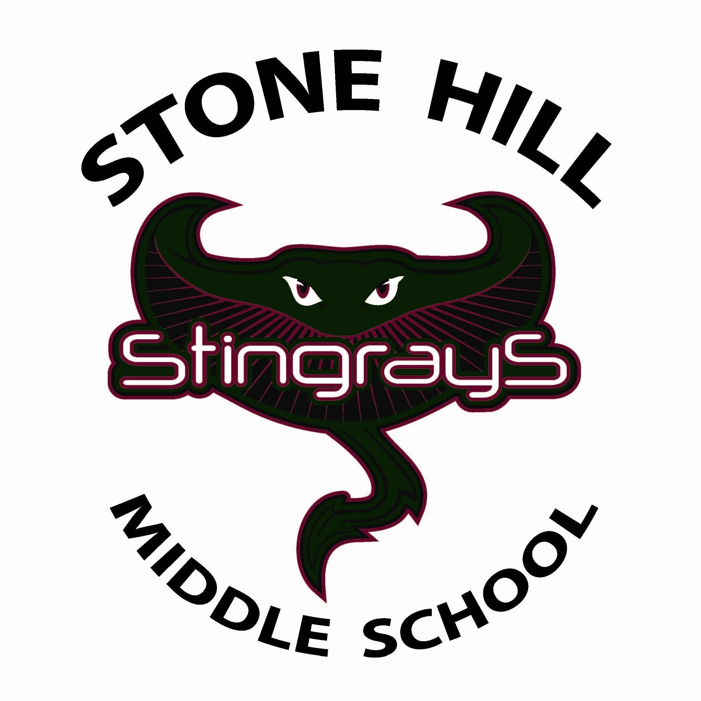
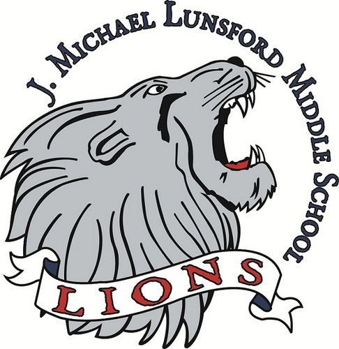

Achievements and Affiliations
College
Hackathons
High School
- National Honor Society, Freedom High School
- National Science Honor Society, Freedom High School
- National Tri-M Honor Society, Freedom High School
- Marching Band Woodwind Most Improved Award, Freedom High School
- Freedom Student of the Month, Freedom High School
- Lunsford Student of the Month, J. Michael Lunsford Middle School
Education
General Education
- 5 years-Little River Elementary School
- 2 years-Stone Hill Middle School

- 1 year-J. Michael Lunsford Middle School

- 4 years-Freedom High School
- Drexel University
Computer Education
High School
- Computer Math Class-Freedom High School 2014-2015
- AP Computer Science 2015-2016
- Udacity Intro to CSS and HTML Class-2015
- Udacity Javascript Basics-2015
College
- CS 164-Introduction to Computer Science
- CI 101-Computing and Informatics Design 1
- CS 171-Computer Programming 1-UPCOMING
- CI 102-Computing and Informatics Design 2-UPCOMING
Technology Experience
- Java
- HTML
- CSS
- Javascript
- ArcGIS